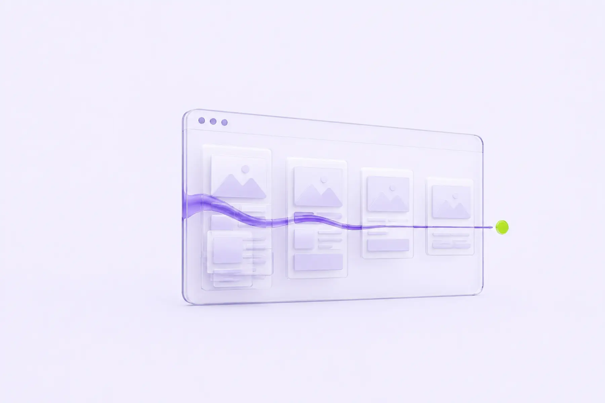

Shopify Liquid Geliştirmelerinde Performansın Korunması
Bir Shopify temasına yeni bir section, yeni bir uygulama ya da özel bir blok eklemek genelde birkaç saatlik bir iş gibi görünür. Ama her ekleme, farkında olmadan tema puanını düşüren küçük bir maliyet biriktirir. Bu yazıda o maliyeti sıfıra indiren pratik alışkanlıkları anlatıyorum.

Shopify temaları diğer CMS'lerden farklı bir kısıtla çalışır: temanın kendisini değil, üzerine inşa edilen mağazanın büyük kısmını mağaza sahibi ve onun eklediği uygulamalar şekillendirir. Bir geliştirici olarak sizin kontrolünüz sadece Liquid dosyalarıyla, tema CSS/JS'iyle ve section şemalarıyla sınırlı; ama performans sorumluluğunun büyük kısmı yine size düşüyor, çünkü mağaza sahibi "sayfa yavaş" dediğinde bakılan ilk yer temadır.
Bu durum, geleneksel bir web projesinden farklı bir çalışma disiplini gerektiriyor. Statik bir sitede performans genelde bir kere kurulur ve nadiren bozulur; Shopify mağazasında ise her yeni uygulama kurulumu, her yeni kampanya section'ı, her tema düzenleyici değişikliği potansiyel bir regresyon noktasıdır. Bu yazıda paylaştığım yöntemler, tek seferlik bir "performans temizliği" değil, sürekli tekrar eden bir geliştirme alışkanlığı olarak düşünülmeli.
1. Liquid'in kendi performans maliyeti
Liquid bir şablon dilidir ve her render'da sunucu tarafında yorumlanır (Shopify'ın kendi altyapısında). Liquid kodunun kendisi genelde JavaScript kadar "pahalı" değildir, ama yanlış kullanıldığında ciddi gecikmeye yol açabilir:
- İç içe döngüler: Bir koleksiyon sayfasında her ürün için tüm varyantları, her varyant için de metafield'ları döngüyle geziyorsanız, ürün sayısı arttıkça render süresi doğrusal değil, çoğu zaman daha kötü büyür. Mümkünse döngü içindeki döngüyü, ihtiyaç duyulan veriyi önceden filtreleyerek azaltın.
- Gereksiz
all_productsya da büyük koleksiyon sorguları: Bir section içinde "önerilen ürünler" göstermek için tüm ürün kataloğunu çekip Liquid içinde filtrelemek, Shopify'ın kendirecommendationsAPI'sini ya da hedefli bir koleksiyon sorgusunu kullanmaktan çok daha maliyetlidir. - Metafield okumalarının tekrarlanması: Aynı metafield'a bir sayfada birden fazla yerden erişiliyorsa, değeri bir
{% assign %}ile bir kere değişkene atayıp tekrar tekrar okumak yerine o değişkeni kullanmak, gereksiz tekrar sorgularını önler.
{%- comment -%} Kötü: her döngüde metafield yeniden okunuyor {%- endcomment -%}
{% for varyant in product.variants %}
{{ product.metafields.custom.ozellik }}
{% endfor %}
{%- comment -%} İyi: bir kere assign, sonra kullan {%- endcomment -%}
{% assign ozellik = product.metafields.custom.ozellik %}
{% for varyant in product.variants %}
{{ ozellik }}
{% endfor %}2. Section ve blok eklerken JavaScript disiplinini korumak
Yeni bir section, genelde beraberinde yeni bir JS dosyası getirir: bir slider, bir akordeon, bir görsel karşılaştırma aracı... Sorun şu ki bu dosyalar sıklıkla theme.liquid içine global olarak eklenir ve o section'ın hiç kullanılmadığı sayfalarda bile indirilir.
- Section'a özel script'i section'ın kendi dosyasında tutun: Global
theme.jsyerine, section'ın Liquid dosyasının sonunda koşullu bir<script src="{{ 'section-adi.js' | asset_url }}" defer></script>etiketiyle yüklemek, o kodun yalnızca section gerçekten sayfada varken indirilmesini sağlar. - Web component / özel element deseni kullanın: Shopify'ın Dawn temasından itibaren yaygınlaşan yaklaşım, her section'ı bir
customElements.define()ile kendi kapsüllenmiş bileşenine dönüştürmek. Bu, hem kod tekrarını azaltır hem de tarayıcının yalnızca DOM'da o element varken ilgili davranışı çalıştırmasını sağlar. - jQuery gibi genel kütüphaneleri tekrar tekrar yüklemeyin: Farklı geliştiriciler farklı zamanlarda eklediği uygulama/section'larla aynı kütüphaneyi birden fazla kez sayfaya dahil edebilir. Tema dosyalarını periyodik olarak denetleyip yinelenen bağımlılıkları temizlemek gerekir.
3. Uygulamaların (app) gizli maliyeti
Shopify App Store'daki uygulamaların çoğu, mağazanıza kendi script ve CSS dosyalarını theme.liquid'e otomatik olarak enjekte eder — genelde app-block ya da tema uzantısı (theme app extension) mekanizmasıyla. Bu, geliştirme ekibinin doğrudan kod incelemesi yapamadığı bir alan olduğu için performans denetiminde en çok göz ardı edilen kısımdır.
Pratik bir alışkanlık: Yeni bir uygulama kurulmadan önce ve kurulduktan hemen sonra PageSpeed Insights ile karşılaştırmalı bir ölçüm yapın. Bu, o uygulamanın gerçek maliyetini net olarak gösterir ve "bu uygulama gerçekten gerekli mi" sorusunu veriyle cevaplamanızı sağlar. Kullanılmayan ya da denenip vazgeçilen uygulamaları kaldırmak, çoğu mağazada tek başına en yüksek getirili performans işidir.
Ayrıca Shopify, tema düzenleyicisinde "Uygulama katıştırmaları" için performans etkisini gösteren bir rapor sunuyor (Online Store > Themes > Performans). Bu raporu düzenli kontrol etmek, hangi uygulamanın en çok JS/CSS yükü eklediğini erkenden fark etmenizi sağlar.
4. Görsel ve medya yönetimi Shopify'a özgü incelikleri
- Shopify'ın kendi CDN'i,
{{ image | image_url: width: 800 }}gibi filtrelerle otomatik boyutlandırma ve format dönüşümü (WebP) yapar; bunu manuel olarak yüklenen sabit boyutlu görseller yerine her zaman kullanın. srcsetvesizesözniteliklerini section şablonlarında elle yazmak yerine Shopify'ınimage_tagfiltresine bırakmak, responsive görsel sunumunu hatasız hale getirir.- Ürün galerisindeki ilk görsel LCP adayıdır; bu görselde
loading="lazy"kullanmayın ve mümkünsefetchpriority="high"ekleyin.
5. Koleksiyon sayfalarında sayfalama ve filtreleme maliyeti
Yüksek ürün sayısına sahip mağazalarda koleksiyon sayfaları, performans sorunlarının en sık biriktiği yerdir. Buradaki tipik hatalar ve çözümleri:
- Tüm ürünleri tek sayfada listelemek: "Kullanıcı deneyimi için sonsuz kaydırma yapalım" düşüncesiyle sayfa başına 48-100 ürün render etmek, hem Liquid render süresini hem de DOM boyutunu büyütür; büyük DOM, tarayıcının layout ve stil hesaplama maliyetini artırarak INP'yi de kötüleştirir. Sayfa başına 24-36 ürün arası makul bir denge sağlar.
- Filtreleme (faceted search) için tüm ürün setini istemci tarafında filtrelemek: Shopify'ın kendi
filternesnesini ve Section Rendering API'sini kullanarak yalnızca filtrelenmiş sonucu (tam sayfa yeniden yüklemeden) getirmek, hem daha az veri transferi hem de daha tutarlı bir deneyim sağlar. - Section Rendering API'yi doğru kullanmak: Filtre değiştiğinde tüm sayfayı değil, yalnızca ürün listesi section'ını
?section_id=parametresiyle yeniden istemek, sayfanın header/footer gibi değişmeyen kısımlarının tekrar indirilmesini önler.
6. Vaka: 40'tan fazla uygulaması olan bir moda mağazası
Danıştığım bir moda mağazasında, yıllar içinde denenip kaldırılmamış toplam 40'ın üzerinde uygulama birikmişti — bir kısmı aktif olarak kullanılıyordu, büyük kısmı ise "belki bir gün lazım olur" mantığıyla pasif duruyordu. Sayfa kaynak kodunu incelediğimizde, hiçbir işlevi olmayan 11 farklı script dosyasının hala her sayfada yüklendiğini gördük. Bu script'leri kaldırmak (uygulamaları tamamen kaldırıp, tema dosyalarında geriye kalan enjeksiyon kodlarını temizleyerek) tek başına toplam JS boyutunu üçte bir oranında azalttı ve mobil LCP'de yaklaşık 900ms'lik bir iyileşme sağladı.
Buradaki ders şu: performans denetimi yaparken yalnızca "şu an aktif olarak kullanılan" uygulamalara değil, temanın theme.liquid, header.liquid ve tüm section dosyalarına sızmış, artık hiçbir işlevi olmayan kod kalıntılarına da bakmak gerekiyor. Bir uygulamayı Shopify yönetim panelinden kaldırmak, o uygulamanın tema dosyalarına elle eklediği kod parçalarını otomatik olarak temizlemez.
7. Tema güncellemeleri ve kod temizliği alışkanlığı
Zamanla büyüyen bir tema kod tabanında, kimin hangi amaçla hangi kodu eklediğini takip etmek zorlaşır. Bunu yönetilebilir tutmanın birkaç yolu var:
- Her özel section ve blok için, dosyanın başına kısa bir yorum satırıyla ne işe yaradığını ve hangi tarihte eklendiğini not edin; altı ay sonra "bu kod hala gerekli mi" sorusuna cevap vermek çok daha kolay olur.
- Shopify CLI ve tema kontrol aracı (Theme Check) ile düzenli statik analiz yapın; kullanılmayan değişkenler, verimsiz Liquid kalıpları ve erişilebilirlik sorunları bu şekilde erken yakalanır.
- Git tabanlı bir sürüm kontrolü kullanıyorsanız, her yayın öncesi değişen dosyaların diff'ini gözden geçirip beklenmedik büyük dosya eklemelerini (ör. optimize edilmemiş bir görsel ya da minify edilmemiş bir kütüphane) fark edin.
8. Tema puanını (Theme Store skoru) yanlış anlamamak
Shopify Theme Store'da temaların yanında görünen performans puanı, temanın varsayılan demo verisiyle, hiçbir uygulama eklenmemiş haliyle ölçülür. Bu puan bir başlangıç kalitesi göstergesidir ama canlı mağazanızın gerçek performansını yansıtmaz. Kendi mağazanız için gerçek referans noktanız, gerçek ürün verisiyle ve gerçek uygulama setiyle yapılan PageSpeed Insights ve Search Console ölçümleri olmalı.
9. Geliştirme sürecine performans kontrolünü nasıl yerleştirmeli?
- Her yeni section/blok geliştirmesinden önce, o özelliğin gerçekten yeni bir JS dosyası gerektirip gerektirmediğini sorgulayın; mevcut bir bileşenle çözülebiliyorsa yeni dosya eklemeyin.
- Geliştirme tamamlandığında, staging ortamında (tema önizleme linkiyle) Lighthouse taraması yapıp mevcut canlı temayla karşılaştırın.
- Yayına almadan önce, o section'ın sayfada olmadığı bir sayfada gereksiz bir kaynak indirilip indirilmediğini DevTools Network sekmesinden kontrol edin.
- Üç ayda bir, kurulu uygulamaların listesini gözden geçirip kullanılmayanları kaldırın; bu tek adım genelde en çok göz ardı edilen ama en yüksek etkili adımdır.
10. Geliştirici ile mağaza sahibi arasındaki iletişim boşluğu
Birçok performans sorunu aslında bir iletişim sorunudur. Mağaza sahibi yeni bir uygulama kurar, pazarlama ekibi yeni bir banner section'ı ister, ajans yeni bir kampanya sayfası hazırlar — bunların hiçbiri tek başına "büyük" bir değişiklik gibi görünmez, ama zamanla birikir. Bu boşluğu kapatmanın en etkili yolu, teknik olmayan paydaşlara da anlaşılır bir performans sözleşmesi oluşturmak:
- Yeni bir uygulama kurulmadan önce, geliştirme ekibine (ya da danışmana) haber verilmesini bir süreç haline getirin — onay mekanizması değil, sadece görünürlük.
- "Bu özelliği ekleyebilir miyiz" sorusunu "bu özelliği hangi performans bütçesi içinde ekleyebiliriz" sorusuna dönüştürün; ör. yeni bir section en fazla 15KB JS ekleyebilir gibi somut bir sınır koymak, tartışmayı sübjektiften objektife taşır.
- Aylık ya da üç aylık bir "tema sağlık kontrolü" (kurulu uygulama sayısı, toplam JS/CSS boyutu, PageSpeed skor trendi) raporunu mağaza sahibiyle paylaşmak, performansı görünmez bir teknik detay olmaktan çıkarıp iş kararlarının bir parçası haline getirir.
Sık yapılan hatalar
- Her yeni section için gerekli olmasa bile
theme.liquid'e global script eklemek — o kod, section'ın hiç kullanılmadığı sayfalarda bile indirilmeye devam eder. - Koleksiyon sayfalarında filtreleme mantığını Liquid döngüleri içinde, büyük veri setleri üzerinde çalıştırmak yerine Shopify'ın kendi filtre altyapısına bırakmamak.
- Uygulama kurulumlarını performans etkisi ölçmeden, sadece özellik ihtiyacına göre yapmak ve bir süre sonra o uygulamanın hala kurulu olduğunu unutmak.
- Ürün görsellerini Shopify CDN filtreleri yerine sabit, tek boyutlu dosyalar olarak yüklemek ve her cihaza aynı büyük dosyayı göndermek.
- Tema puanını canlı mağazanın gerçek performansıyla karıştırmak ve bu yüzden gerçek kullanıcı verisini hiç kontrol etmemek.
Sonuç
Shopify'da performans, tek seferlik bir tema optimizasyonundan çok, her yeni özellik eklendiğinde tekrar sorulması gereken bir disiplin. Liquid döngülerini sadeleştirmek, section script'lerini kapsüllemek, uygulama envanterini düzenli denetlemek ve görsel teslimini Shopify'ın kendi CDN mekanizmasına bırakmak, tema puanını değil gerçek kullanıcı deneyimini koruyan adımlar. Asıl soru "bu özellik eklenebilir mi" değil, "bu özellik hangi maliyetle eklenebilir" olmalı.
Yukarıda anlatılan moda mağazası örneğinde uyguladığımız değişikliklerin özeti aşağıdaki gibiydi; küçük ve tek tek bakıldığında mütevazı görünen adımların toplamda ne kadar fark yarattığını göstermesi açısından faydalı bir referans:
| Adım | Etki |
|---|---|
| Kullanılmayan 40+ uygulamadan 27'sinin kaldırılması | Toplam JS boyutunda ~%33 azalma |
| Koleksiyon sayfası ürün sayısının 96'dan 36'ya düşürülmesi | DOM boyutunda belirgin küçülme, INP'de iyileşme |
| Ürün görsellerinin Shopify CDN filtrelerine taşınması | Mobil LCP'de ~900ms iyileşme |
| Section script'lerinin koşullu yüklemeye geçirilmesi | İlgisiz sayfalarda gereksiz indirmenin ortadan kalkması |
Bu tablodaki hiçbir madde tek başına devrim niteliğinde bir değişiklik değil; hepsi ayrı ayrı birkaç saatlik, sıkıcı denebilecek bakım işleri. Ama toplandığında mağazanın hem arama motorlarındaki hem de gerçek kullanıcı deneyimindeki görünümünü kalıcı olarak değiştiren bir bütün oluşturdular. Shopify performansında genelde aranan "tek büyük çözüm" yoktur; küçük, tekrarlanabilir disiplinlerin toplamı vardır. Bu yüzden bir sonraki adım olarak, kendi mağazanızda kurulu uygulamaların ve tema dosyalarınızın kısa bir envanterini çıkarmanızı öneririm — çoğu zaman en büyük kazanç, en karmaşık teknik çözümde değil, bu envanterin ilk taramasında ortaya çıkar.
Shopify'ın kendi tema puanı yeterli bir gösterge mi?
İyi bir başlangıç noktası ama tek başına yeterli değil. Tema puanı temanın varsayılan haliyle ölçülür; mağaza sahibinin sonradan eklediği uygulamalar, özel section'lar ve tema düzenlemeleri bu skora dahil değildir. Gerçek performansı görmek için canlı mağazanızı PageSpeed Insights ve Shopify'ın kendi Online Store Speed raporuyla ayrıca test etmeniz gerekir.
Her yeni section için ayrı bir JavaScript dosyası mı yüklemeliyim?
Section'a özgü davranış gerekiyorsa evet, ama dosyayı sadece o section sayfada varsa yüklemek şartıyla. Bunu section'ın kendi Liquid dosyası içinde koşullu olarak script etiketi eklemek ve defer kullanmak, o kodun ihtiyacı olmayan sayfalarda indirilmesini engeller.
Uygulama blokları performansı nasıl etkiliyor?
Üçüncü parti uygulamalar genelde kendi script ve CSS dosyalarını sayfaya ekler; bunların sayısı arttıkça hem indirilecek toplam boyut hem de ana iş parçacığındaki iş yükü artar. Kullanılmayan uygulamaları kaldırmak ve kalanların yüklenme şeklini denetlemek genelde en hızlı kazancı sağlar.
Özel bir tema mı, Theme Store'dan hazır bir tema mı performans açısından daha avantajlı?
Doğrudan bir avantajdan çok, kontrol farkından bahsetmek daha doğru. Hazır bir tema (özellikle Shopify'ın kendi Dawn tabanlı temaları) modern performans pratiklerini (web component mimarisi, koşullu script yükleme) baştan uyguluyor olabilir; ama zamanla eklenen özelleştirmeler bu avantajı kolayca eritebilir. Özel bir tema da doğru disiplinle en az o kadar hızlı olabilir. Belirleyici olan tema seçimi değil, yukarıda anlatılan geliştirme disiplininin sürdürülüp sürdürülmediği.